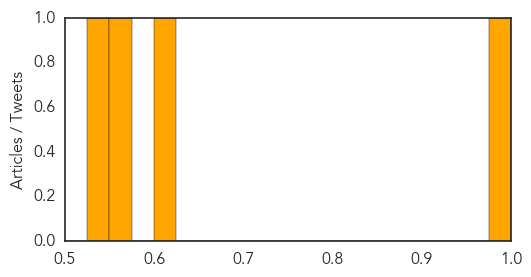

Pertussis
30-Day Web Trend
0 alerts, 0 warnings
30-Day Twitter Trend
0 alerts, 0 warnings

Article Locations

Article Confidences
Top Articles:
Top Tweets:
-
No tweets found for Nov 20, 2014
Dengue Fever
30-Day Web Trend
0 alerts, 0 warnings

30-Day Twitter Trend
0 alerts, 0 warnings

Article Locations

Article Confidences

Top Articles:
- 0.997
- 'Kissing Bug' Disease, Chikungunya, and Dengue Arrive in US Amid Rising Temperatures
- 0.948
- Dengue deaths being dealt with on a ‘war-footing’: Health dept to HC
- 0.918
- Bombay HC advises people to keep houses clean to prevent dengue
- 0.858
- Some Tips To Avoid Dengue, Courtesy Hc
- 0.810
- With three more deaths, dengue toll reaches 18
- 0.547
- In the wake of dengue outbreak, Bombay HC asks citizens to keep surroundings clean
Top Tweets:
-
No tweets found for Nov 20, 2014